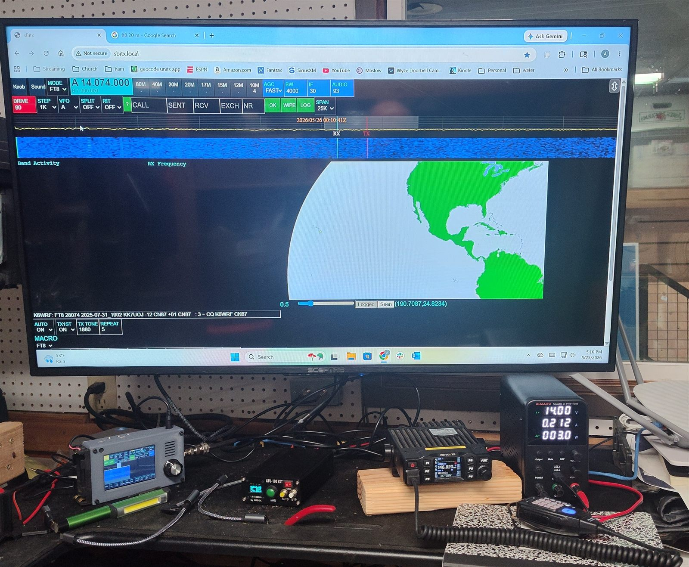
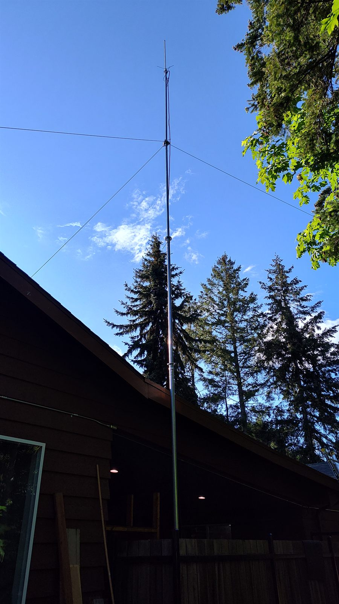
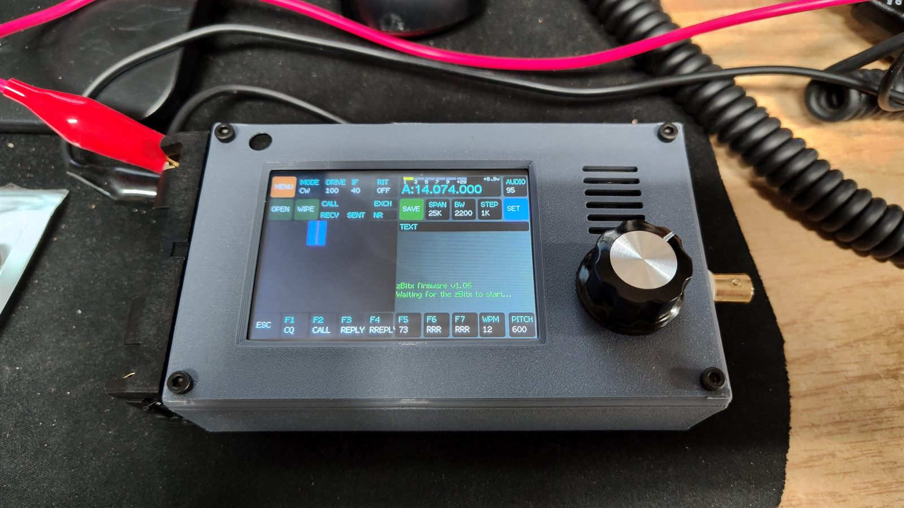
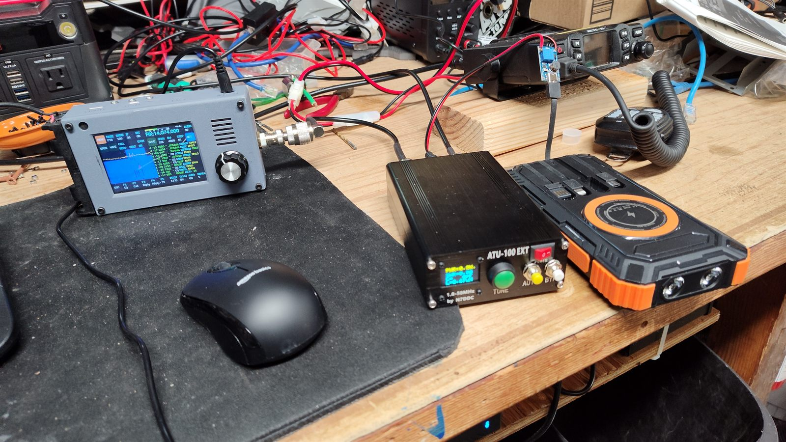
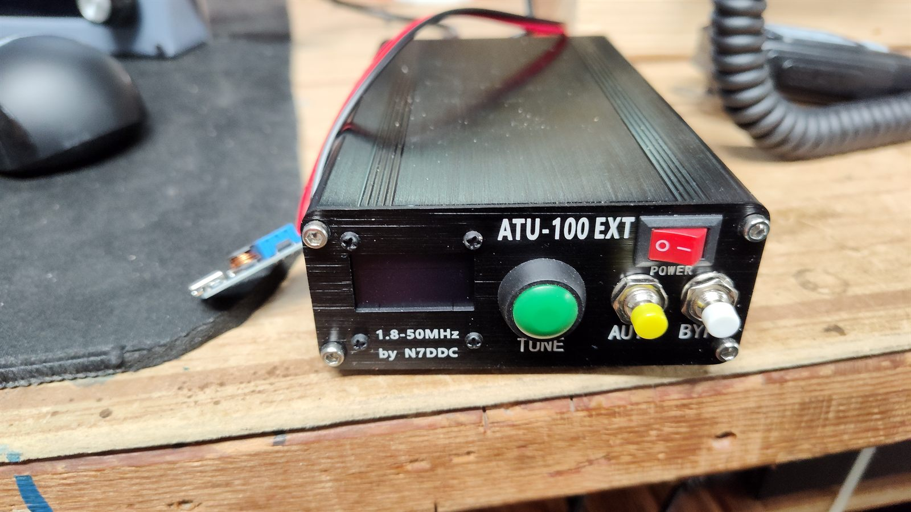
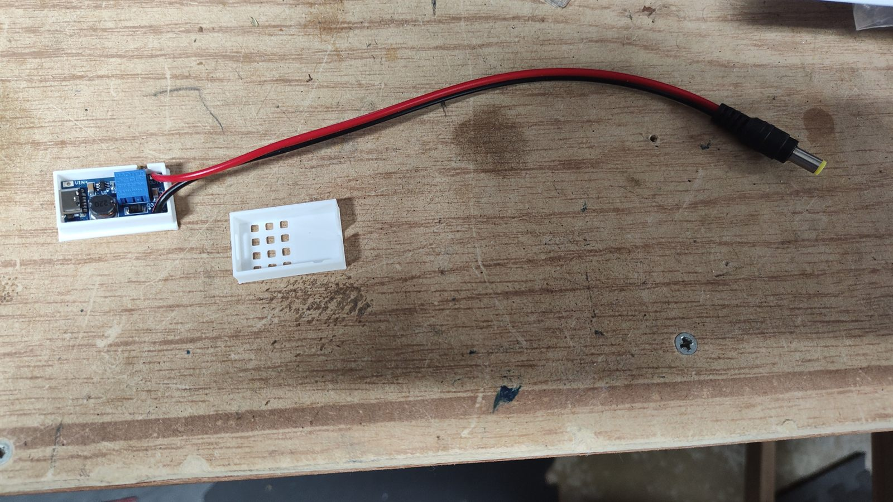
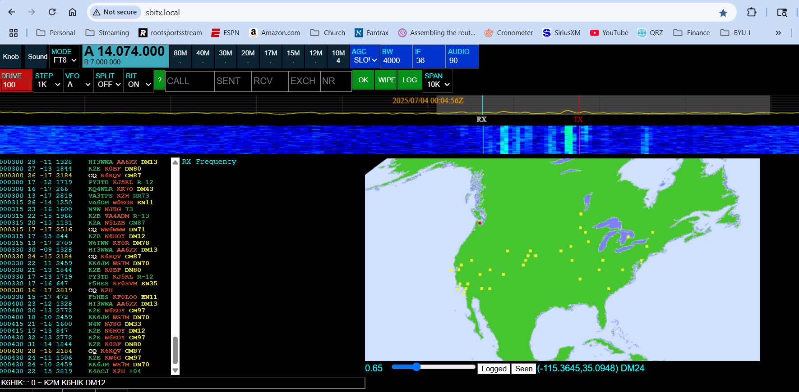
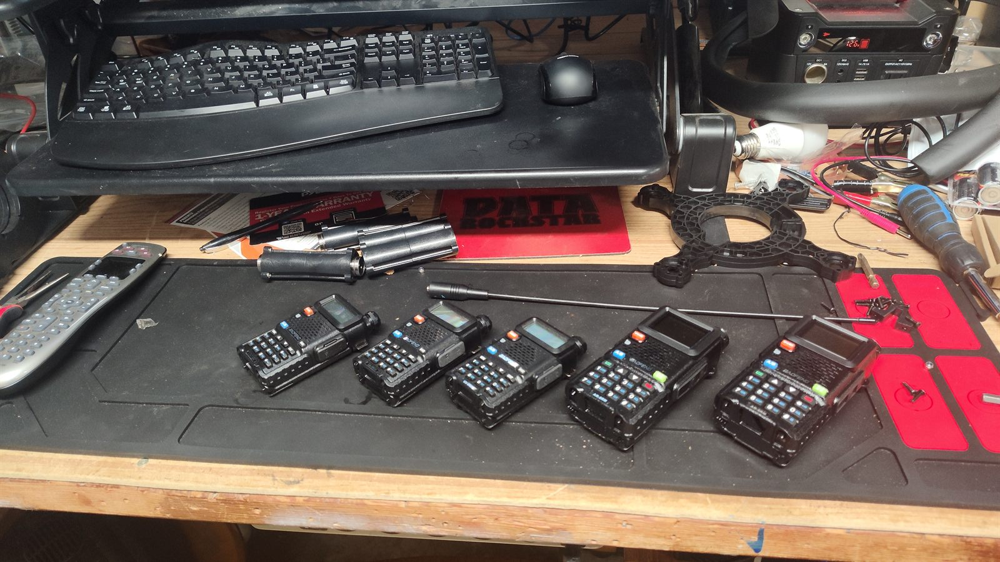

Physical Project
Ham Radio — KK7UOJ
My amateur radio station, running under the call sign KK7UOJ as a Technician-class licensee. A modest dual-band setup based around a Retevis RT95 mobile, a Comet GP-6 vertical, and a telescoping mast, with a zBitx QRP rig handling HF.

Overview
The station
I'm currently licensed at the Technician level, which gives me access to VHF and UHF privileges plus limited HF segments. Most of my on-the-air activity sits on the 2-meter and 70-centimeter bands — local repeaters, simplex chatter, and the occasional public-service event — using a mobile rig running on a benchtop power supply into an outdoor vertical.
I also currently serve as the secretary for the Highline Amateur Radio Club, whose website I built and maintain.
Equipment
What the station is built from
VHF/UHF Mobile
- Retevis RT95 dual-band (2m/70cm) mobile transceiver, 25W output
Handhelds
- Five Baofeng dual-band handhelds for portable and family use
HF QRP
- zBitx SDR HF QRP transceiver from HF Signals — Raspberry Pi-based, ~5W
- Malahit ATU-100 portable auto-tuner
- GOOZEEZOO JPC-12 portable HF vertical (7–50 MHz, 40m–6m)
- 9V 3A bench supply for shack operation
Antenna
- Comet GP-6 dual-band vertical (2m/70cm), gain-tuned for repeater work
Mast And Mounting
- 33-foot telescoping mast for elevating the vertical above the roofline
Power
- 13.8V switching power supply for benchtop operation

HF QRP Station
The zBitx, built up piece by piece
For HF I picked the zBitx from HF Signals — about $200 delivered after tax and shipping, hand-assembled in India. The hook is that it's built on a 64-bit Raspberry Pi Zero 2W, so there's a full Linux computer in the radio: touch-screen interface, contact logging, automatic CW decode and reply, and mode coverage spanning AM, USB, LSB, FT8, CW, CWR, digital, and 2-tone in the same box.
It runs off two 18650 cells in the field or a 6–9V supply on the bench. Battery quality is non-negotiable here, so it stays on brand-name 18650s in the field and a $10 9V 3A bench supply in the shack.


Tuner — Malahit ATU-100
To get clean SWR across all bands I added an $88 Malahit ATU-100 auto-tuner. The ATU wants 12–15V, and the kit ships with a USB-C buck converter that steps up portable battery voltage to where the tuner expects it. After soldering on the included pigtail and trimming the converter to about 13V, I dropped it into a 3D-printed case so the whole tuner kit travels cleanly.


Antenna — GOOZEEZOO JPC-12
I started with a $25 home-brew long-wire (1:9 balun and 100ft of speaker wire), but have since switched to a GOOZEEZOO JPC-12 portable HF vertical — an 8-band 7–50 MHz (40m–6m) vertical with a low-SWR coil tap setup that's much faster to deploy for SOTA/POTA-style operating than running out wire.
Bench operation
There are three ways to drive the zBitx from the shack. The most direct is to plug HDMI plus a USB keyboard/mouse straight into the radio (you need a mini-HDMI adapter and a micro-USB OTG adapter), which exposes both the radio UI and the underlying Raspberry Pi OS.
Nicer still: when the Pi joins WiFi it serves the full UI at
https://sbitx.local, so any browser on the network can
drive the radio with no extra cables. Or if you'd rather keep your
normal shack workflow, the CAT port lets a shack PC do FT8 and other
digital modes the conventional way.
First time I sat down with it, I parked on 20m FT8 for about half an hour. The auto-decoder plotted every received contact on a world map, and with automatic mode on, the radio will reply to any contact you click, send a signal report and 73, and log the contact entirely on its own.

Field operation, and where it’s going
Out of the shack, two quality 18650s drive the full 5W output and the ATU-100 runs off the buck converter from a USB-C power bank. The touch screen plus stylus works but washes out in bright sunlight, so the plan is to use a tablet as a WiFi hotspot and drive the radio from the web UI instead.
Short list of upcoming improvements: a more portable mic (currently this hand mic) and a small self-powered speaker, since the built-in audio is a little quiet. Overall this is a hobbyist radio in active development, and the hardware and software are both evolving fast — I think it'll be a really nice little station in 12–24 months.
Handhelds
Five Baofengs for portable use
A small fleet of Baofeng dual-band handhelds — handy for family communications, public-service events, and as loaners when someone wants to try the hobby without buying a radio first.
